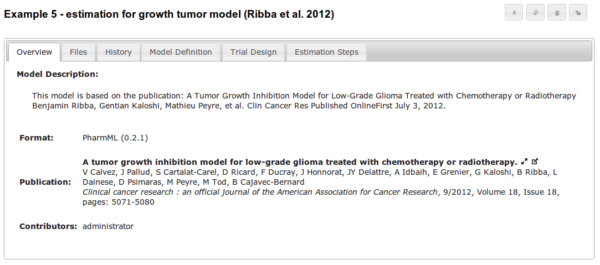

Model Publishing
When models are created in the DDMoRe Model Repository, they are visible only to the user creating it, and those with admin rights.
Users of DDMoRe Model Repository are able to publish their own models, subject to the latter
- containing all mandatory annotations required by DDMoRe.
- complying with the guidelines described at the start of the submission process

When the user clicks on the unlock button, a confirmation prompt is shown. Models once published cannot be unpublished, and therefore care must be taken when taking this step. If the user decides to proceed with publishing the model, the status is changed to published, and the user is taken to the published version of the model.
It is possible to update a published model. Updated versions of the model are not published until the user decides to do so. Until then, only the published version of the model is visible to unauthenticated users, and the most recent version is accessible to users that own the model or those with admin rights.